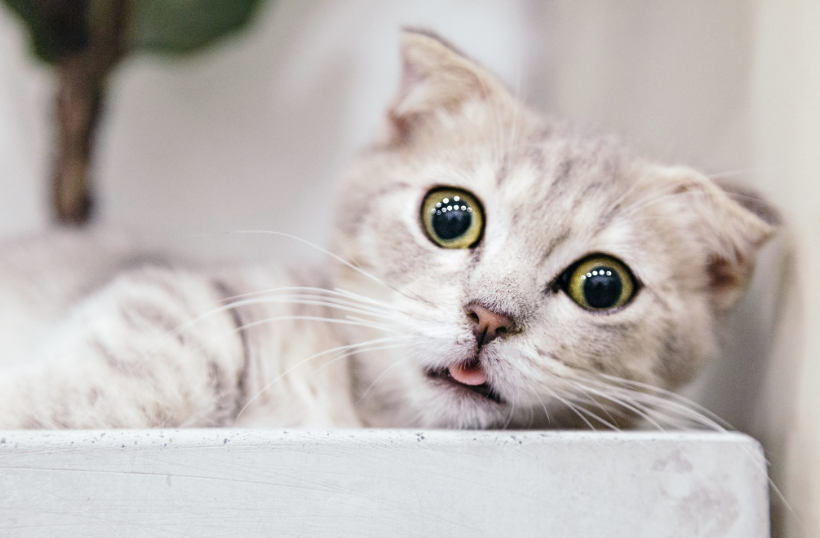

*onmouseover - HTML 속성을 이용한 이미지 변경*
마우스를 사진 위에 올릴 때 다른 이미지를 가져옵니다. 한번 바뀌면 원래대로 돌아오지 않습니다.

*img hover - CSS내 width 속성을 이용한 이미지 사이즈 변경*
마우스를 사진 위에 올릴 때 사이즈를 변경합니다. 마우스를 떼면 원상복귀 합니다. HTML을 읽을 때 변경할 사진을 같이 받아옵니다.
*img hover - CSS내 background 속성을 이용한 이미지 변경*
마우스를 사진 위에 올릴 때 이미지를 변경합니다. background 속성을 사용하여 사진이 잘려 나옵니다. 마우스를 떼면 원상복귀 합니다. HTML을 읽을 때 변경할 사진을 같이 받아옵니다.

*div hover - CSS내 display 속성을 이용한 이미지 변경* 참고 사이트
마우스를 div 영역 위에 올릴 때 사이즈를 변경합니다. img 태그를 두개 사용하고, display:none, display:inline-block을 변경해주어 한 이미지만 보여주는 방식을 사용합니다. 마우스를 떼면 원상복귀 합니다. HTML을 읽을 때 변경할 사진을 같이 받아옵니다.